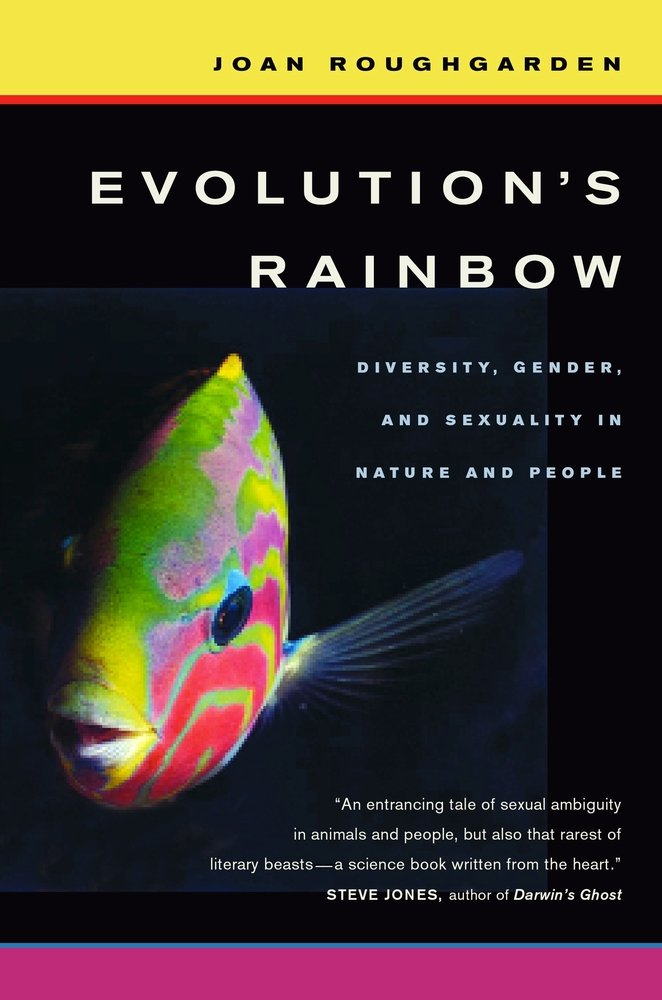
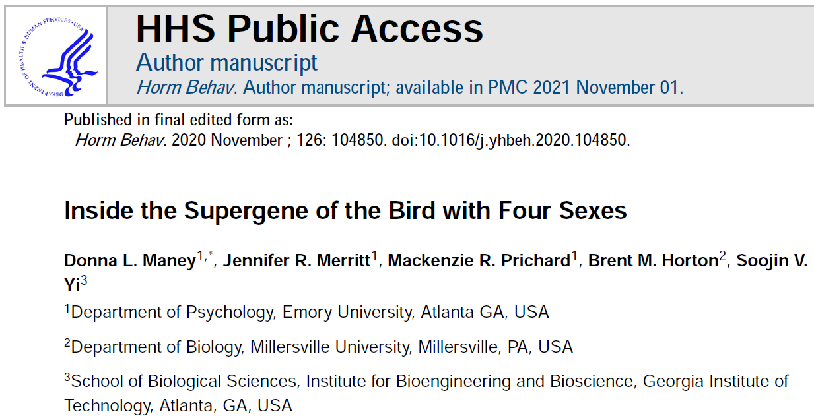
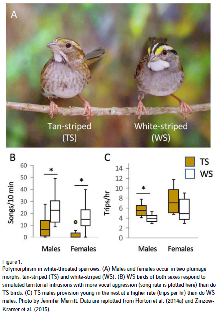
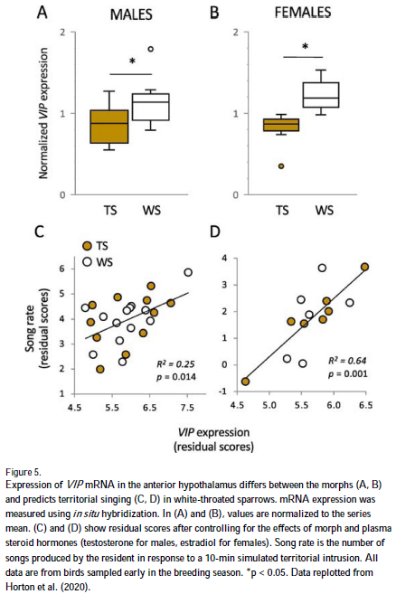

Sex in a Biological Context
BioGraphI Case Study
Goal
- Encourage students to use established research materials to explore sex in a biological context
Objectives
- Comment on an interview with Dr Joan Roughgarden
- Summarize a passage from a book by Dr Joan Roughgarden
- Interpret a couple pieces of data visualizaton from sex studies
Context
- data science course
- mostly biology majors, mostly sophomores
- homework assignment
1: Interview
Dr Joan Roughgarden was one of the most important researchers in the field of sexual selection theory, and she has written several works on the matters including the book Evolution’s Rainbow. Dr Roughgarden spoke at a WiSE conference (Women in Science and Engineering) a couple of years ago. For this resource , you may focus on the middle of the video from the “Evolution’s Rainbow” segment (at the 9:25 mark) to the “Career track” segment (at the 15:50 mark).

- “There is a lot of diversity in sex and gender in not only humans, but animals as well. With a variety of sex and gender in living beings that is identified by Dr. Roughgarden, it may mean that the sexual selection theory is outdated as we expand our knowledge on this topic. The theory needs to be rewritten for this modern era.”
- “This excerpt from Dr. Joan Roughgarden discusses her work on her book Evolution’s Rainbow and her personal experience as a (trans) woman in science. She discusses her work on gender and sexuality across all animal kingdoms, argues that sexual selection should be scrapped, and thinks it will collapse altogether. As a woman in science, she has seen that men’s careers in science are linear and are privileged with a sense of authority.”
- “The career track segment of Dr. Joan Roughgarden’s speech at the Women in Science and Engineering conference focused on her experiences as a transgender woman in the field of biology. She shared the challenges she faced while navigating her gender identity in a male-dominated field and the discrimination and bias she encountered. However, she also emphasized the importance of being true to oneself and finding a supportive community. Roughgarden’s message was one of resilience and perseverance in the face of adversity.”
2: Book
Skim through chapter 2 “Sex versus Gender” of Evolution’s Rainbow. What is your impression of the writing? Or, what information did you get from this chapter?


- “While reading the small passage, from Evolution’s Rainbow Chapter 2, it states that male and female are just biological categories. It starts by saying that people use the words, gender and sex wrong stating that the word’s mean male and female. In which the word’s male and female does not relate with have two different meanings biological criteria and in the social criteria.”
- “Looking through the text and readings we can see that Dr. Roughgarden discusses in terms about”male” and “female” instead of “man” and “woman”. As she done so she also discusses about when it comes to humans male and female don’t coincide 100 percent. She also discusses about the social categories rests in society and not in science.”
- “This excerpt approaches males and females from the sex, gender, and social perspective. It states that male and female as a "Sex" does not make sense since sex refers to the mixing of genes or reproduction, but some reproduction is asexual reproduction without two partners. Gender’s definition is embracing the biological definition but the other attributes of gender –masculinity and femininity– are not defined biologically. The author is writing up and tearing down these words and stripping them of meaning to reveal their inconsistencies.”
3 and 4: Data Visualizations
What is your impression of the data visualization below? What information can you gather from the figure(s)?

Maney DL, Merritt JR, Prichard MR, Horton BM, Yi SV. Inside the supergene of the bird with four sexes. Horm Behav. 2020 Nov;126:104850. doi: 10.1016/j.yhbeh.2020.104850. Epub 2020 Sep 19. PMID: 32937166; PMCID: PMC7725849.


- “One morph performs a few of the aforementioned actions more frequently than the other. For instance, both sexes of WS birds sing more frequently in response to simulated territorial invasions than TS birds do. TS females seldom ever sing, despite the fact that TS males frequently sing loudly. While TS males are more likely to stay in their own territories, WS males are more prone to participate in territorial invasions. TS birds provide nestlings more frequently than their WS counterparts, and males reproduce this tendency more frequently than females. In general, WS birds appear to devote more time to mate-hunting and intrasexual rivalry, whereas TS birds adopt a more parental life-history approach.”
- “that data infomration that has been provided above has allowed me to follow what is being studied fairly easy since they would use the the color of the birds that they have to be distinguished and is being used in the boxplots in which helps us know which one is for which. with that in mind the boxplot allows us to understand the ranges that they have within the species while also allowing us to see how long the songs that each of the birds would sing within the ranges of ten minutes which shows us how different they are. while within the other boxplot then they would show the trips per hour in which helps us see how different they are compared the sexes from both of the species since the females TS have the highest trips per hour compared to the others. another thing they would use is the means, medians, and the quartiles so that they could be compared between the species and their sexes to know the differences.”
- “I can see that the tan-striped bird makes more trips but they have shorter songs sung. Compared to the white bird he made fewer trips but sang for longer times than the tan-striped bird. The used a box graph to show the difference.”
What is your impression of the data visualization below? What information can you gather from the figure(s)?
Maney DL, Merritt JR, Prichard MR, Horton BM, Yi SV. Inside the supergene of the bird with four sexes. Horm Behav. 2020 Nov;126:104850. doi: 10.1016/j.yhbeh.2020.104850. Epub 2020 Sep 19. PMID: 32937166; PMCID: PMC7725849.


- “Prolactin has been associated with provisioning behaviors in both male and female songbirds. Females had a higher normalized VIP expression. Song rate is much higher in males.”
- “My impression of the data visualization is that is clear to follow, the colors are coordinated and it has just the necessary information. From the figures it can be gathered that WS have a higher VIP expression compared to that of the TS, also that TS females have a shorter range than all the other birds. Then from figures C and D we can observe whether there is correlation between the song rate and the VIP expression. For males there is no correlation but for females there is a slight positive correlation.”
- “The males of different markings have more differences to each other than the male and female of similar markings when looking at songs produced. Adding hormones into the mix helped condense the songs between birds of similar markings, making the plot a lot less scattered.”
5: Beyond
If you wanted to discuss the topic of sex (and maybe gender) in a biological context, what other information would you seek out?

- “If I would want to broaden my understanding on this topic, which is something that I will definitely be looking for, is probably toward podcasts and other articles can help me better understand the difference between sex and gender from there experiences.”
- “What are the biological factors of sex? Does mental health come into play?”
- “I would seek out more information on the genetic compositions of organisms and specifically compare genetic maps of female and male organisms. I would also look at asexual organisms and study how reproduction happens with an organism that is neither female nor male or an organism that is both. We could also study the chemicals released on organisms based on gender like how testosterone is released in male organisms and estrogen is released in female organisms.”
Thank You